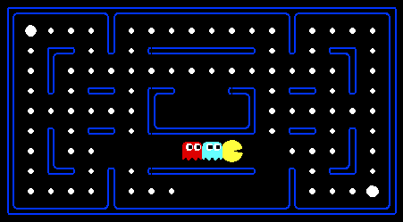
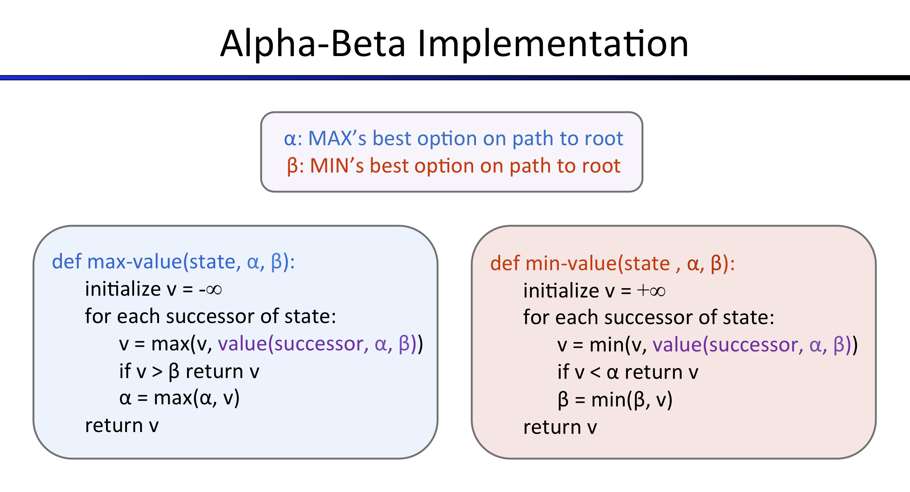

Due: 10/20/2024 at 11:59 pm

In this project, you will design agents for the classic version of Pacman, including ghosts. Along the way, you will implement both minimax and expectimax search and try your hand at evaluation function design.
The code base has not changed much from the previous project, but please start with a fresh installation, rather than intermingling files from project 1.
As in project 1, this project includes an autograder for you to grade your answers on your machine. This can be run on all questions with the command:
python autograder.py
Note: If your python refers to Python 2.7, you may need to invoke python3 autograder.py (and similarly for all subsequent Python invocations) or create a conda environment as described in Project 0.
It can be run for one particular question, such as q2, by:
python autograder.py -q q2
It can be run for one particular test by commands of the form:
python autograder.py -t test_cases/q2/0-small-tree
By default, the autograder displays graphics with the -t option, but doesn’t with the -q option. You can force graphics by using the --graphics flag, or force no graphics by using the --no-graphics flag.
See the autograder tutorial in Project 0 for more information about using the autograder.
The code for this project contains the following files, available as a zip archive.
| Files you'll edit: | |
multiAgents.py |
Where all of your multi-agent search agents will reside. |
| Files you might want to look at: | |
pacman.py |
The main file that runs Pacman games. This file also describes a Pacman GameState type, which you will use extensively in this project. |
game.py |
The logic behind how the Pacman world works. This file describes several supporting types like AgentState, Agent, Direction, and Grid. |
util.py |
Useful data structures for implementing search algorithms. You don't need to use these for this project, but may find other functions defined here to be useful. |
| Supporting files you can ignore: | |
graphicsDisplay.py |
Graphics for Pacman |
graphicsUtils.py |
Support for Pacman graphics |
textDisplay.py |
ASCII graphics for Pacman |
ghostAgents.py |
Agents to control ghosts |
keyboardAgents.py |
Keyboard interfaces to control Pacman |
layout.py |
Code for reading layout files and storing their contents |
autograder.py |
Project autograder |
testParser.py |
Parses autograder test and solution files |
testClasses.py |
General autograding test classes |
test_cases/ |
Directory containing the test cases for each question |
multiagentTestClasses.py |
Project 2 specific autograding test classes |
Files to Edit and Submit: You will fill in portions of multiAgents.py during the assignment. Once you have completed the assignment, submit it to Gradescope. Please do not change the other files in this distribution or submit any of our original files other than this file.
Evaluation: Your code will be autograded for technical correctness. Please do not change the names of any provided functions or classes within the code, or you will wreak havoc on the autograder. However, the correctness of your implementation – not the autograder’s judgements – will be the final judge of your score. If necessary, we will review and grade assignments individually to ensure that you receive due credit for your work.
Academic Dishonesty: We will be checking your code against other submissions in the class for logical redundancy. If you copy someone else’s code and submit it with minor changes, we will know. These cheat detectors are quite hard to fool, so please don’t try. We trust you all to submit your own work only; please don’t let us down. If you do, we will pursue the strongest consequences available to us.
Getting Help: You are not alone! If you find yourself stuck on something, contact the course staff for help. Office hours and Piazza are there for your support; please use them. We want these projects to be rewarding and instructional, not frustrating and demoralizing. But, we don’t know when or how to help unless you ask.
Discussion: Check Piazza regularly! Sometimes your questions are either already asked by other students or written in announcements, read those posts should provide you solutions immediately. Hence, the instructors and students will be able to answer more novel questions. Note: please be careful not to post spoilers.
First, play a game of classic Pacman by running the following command:
python pacman.py
and using the arrow keys to move. Now, run the provided ReflexAgent in multiAgents.py
python pacman.py -p ReflexAgent
Note that it plays quite poorly even on simple layouts:
python pacman.py -p ReflexAgent -l testClassic
Inspect its code (in multiAgents.py) and make sure you understand what it’s doing.
Improve the ReflexAgent in multiAgents.pyto play respectably. The provided reflex agent code provides some helpful examples of methods that query the GameState for information. A capable reflex agent will have to consider both food locations and ghost locations to perform well. Your agent should easily and reliably clear the testClassic layout:
python pacman.py -p ReflexAgent -l testClassic
Try out your reflex agent on the default mediumClassic layout with one ghost or two (and animation off to speed up the display):
python pacman.py --frameTime 0 -p ReflexAgent -k 1
python pacman.py --frameTime 0 -p ReflexAgent -k 2
How does your agent fare? It will likely often die with 2 ghosts on the default board, unless your evaluation function is quite good.
Note: Remember that newFood has the function asList()
Note: As features, try the reciprocal of important values (such as distance to food) rather than just the values themselves.
Note: The evaluation function you’re writing is evaluating state-action pairs; in later parts of the project, you’ll be evaluating states.
Note: You may find it useful to view the internal contents of various objects for debugging. You can do this by printing the objects’ string representations. For example, you can print newGhostStates with print(newGhostStates).
Options: Default ghosts are random; you can also play for fun with slightly smarter directional ghosts using -g DirectionalGhost. If the randomness is preventing you from telling whether your agent is improving, you can use -f to run with a fixed random seed (same random choices every game). You can also play multiple games in a row with -n. Turn off graphics with -q to run lots of games quickly.
Grading: We will run your agent on the openClassic layout 10 times. You will receive 0 points if your agent times out, or never wins. You will receive 1 point if your agent wins at least 5 times, or 2 points if your agent wins all 10 games. You will receive an addition 1 point if your agent’s average score is greater than 500, or 2 points if it is greater than 1000. You can try your agent out under these conditions with
python autograder.py -q q1
To run it without graphics, use:
python autograder.py -q q1 --no-graphics
Don’t spend too much time on this question, though, as the meat of the project lies ahead.
Now you will write an adversarial search agent in the provided MinimaxAgent class stub in multiAgents.py. Your minimax agent should work with any number of ghosts, so you’ll have to write an algorithm that is slightly more general than what you’ve previously seen in lecture. In particular, your minimax tree will have multiple min layers (one for each ghost) for every max layer.
Your code should also expand the game tree to an arbitrary depth. Score the leaves of your minimax tree with the supplied self.evaluationFunction, which defaults to scoreEvaluationFunction. MinimaxAgent extends MultiAgentSearchAgent, which gives access to self.depth and self.evaluationFunction. Make sure your minimax code makes reference to these two variables where appropriate as these variables are populated in response to command line options.
Important: A single search ply is considered to be one Pacman move and all the ghosts’ responses, so depth 2 search will involve Pacman and each ghost moving two times.
Grading: We will be checking your code to determine whether it explores the correct number of game states. This is the only reliable way to detect some very subtle bugs in implementations of minimax. As a result, the autograder will be very picky about how many times you call GameState.generateSuccessor. If you call it any more or less than necessary, the autograder will complain. To test and debug your code, run
python autograder.py -q q2
This will show what your algorithm does on a number of small trees, as well as a pacman game. To run it without graphics, use:
python autograder.py -q q2 --no-graphics
self.evaluationFunction). You shouldn’t change this function, but recognize that now we’re evaluating states rather than actions, as we were for the reflex agent. Look-ahead agents evaluate future states whereas reflex agents evaluate actions from the current state.The minimax values of the initial state in the minimaxClassic layout are 9, 8, 7, -492 for depths 1, 2, 3 and 4 respectively. Note that your minimax agent will often win (665/1000 games for us) despite the dire prediction of depth 4 minimax.
python pacman.py -p MinimaxAgent -l minimaxClassic -a depth=4
GameStates, either passed in to getAction or generated via GameState.generateSuccessor. In this project, you will not be abstracting to simplified states.openClassic and mediumClassic (the default), you’ll find Pacman to be good at not dying, but quite bad at winning. He’ll often thrash around without making progress. He might even thrash around right next to a dot without eating it because he doesn’t know where he’d go after eating that dot. Don’t worry if you see this behavior, question 5 will clean up all of these issues.When Pacman believes that his death is unavoidable, he will try to end the game as soon as possible because of the constant penalty for living. Sometimes, this is the wrong thing to do with random ghosts, but minimax agents always assume the worst:
python pacman.py -p MinimaxAgent -l trappedClassic -a depth=3
Make sure you understand why Pacman rushes the closest ghost in this case.
Make a new agent that uses alpha-beta pruning to more efficiently explore the minimax tree, in AlphaBetaAgent. Again, your algorithm will be slightly more general than the pseudocode from lecture, so part of the challenge is to extend the alpha-beta pruning logic appropriately to multiple minimizer agents.
You should see a speed-up (perhaps depth 3 alpha-beta will run as fast as depth 2 minimax). Ideally, depth 3 on smallClassic should run in just a few seconds per move or faster.
python pacman.py -p AlphaBetaAgent -a depth=3 -l smallClassic
The AlphaBetaAgent minimax values should be identical to the MinimaxAgent minimax values, although the actions it selects can vary because of different tie-breaking behavior. Again, the minimax values of the initial state in the minimaxClassic layout are 9, 8, 7 and -492 for depths 1, 2, 3 and 4 respectively.
Grading: Because we check your code to determine whether it explores the correct number of states, it is important that you perform alpha-beta pruning without reordering children. In other words, successor states should always be processed in the order returned by GameState.getLegalActions. Again, do not call GameState.generateSuccessor more than necessary.
You must not prune on equality in order to match the set of states explored by our autograder. (Indeed, alternatively, but incompatible with our autograder, would be to also allow for pruning on equality and invoke alpha-beta once on each child of the root node, but this will not match the autograder.)
The pseudo-code below represents the algorithm you should implement for this question.

To test and debug your code, run
python autograder.py -q q3
This will show what your algorithm does on a number of small trees, as well as a pacman game. To run it without graphics, use:
python autograder.py -q q3 --no-graphics
The correct implementation of alpha-beta pruning will lead to Pacman losing some of the tests. This is not a problem: as it is correct behaviour, it will pass the tests.
Minimax and alpha-beta are great, but they both assume that you are playing against an adversary who makes optimal decisions. As anyone who has ever won tic-tac-toe can tell you, this is not always the case. In this question you will implement the ExpectimaxAgent, which is useful for modeling probabilistic behavior of agents who may make suboptimal choices.
As with the search and constraint satisfaction problems covered so far in this class, the beauty of these algorithms is their general applicability. To expedite your own development, we’ve supplied some test cases based on generic trees. You can debug your implementation on small the game trees using the command:
python autograder.py -q q4
Debugging on these small and manageable test cases is recommended and will help you to find bugs quickly.
Once your algorithm is working on small trees, you can observe its success in Pacman. Random ghosts are of course not optimal minimax agents, and so modeling them with minimax search may not be appropriate. ExpectimaxAgent, will no longer take the min over all ghost actions, but the expectation according to your agent’s model of how the ghosts act. To simplify your code, assume you will only be running against an adversary which chooses amongst their getLegalActions uniformly at random.
To see how the ExpectimaxAgent behaves in Pacman, run:
python pacman.py -p ExpectimaxAgent -l minimaxClassic -a depth=3
You should now observe a more cavalier approach in close quarters with ghosts. In particular, if Pacman perceives that he could be trapped but might escape to grab a few more pieces of food, he’ll at least try. Investigate the results of these two scenarios:
python pacman.py -p AlphaBetaAgent -l trappedClassic -a depth=3 -q -n 10
python pacman.py -p ExpectimaxAgent -l trappedClassic -a depth=3 -q -n 10
You should find that your ExpectimaxAgent wins about half the time, while your AlphaBetaAgent always loses. Make sure you understand why the behavior here differs from the minimax case.
The correct implementation of expectimax will lead to Pacman losing some of the tests. This is not a problem: as it is correct behaviour, it will pass the tests.
Write a better evaluation function for pacman in the provided function betterEvaluationFunction. The evaluation function should evaluate states, rather than actions like your reflex agent evaluation function did. With depth 2 search, your evaluation function should clear the smallClassic layout with one random ghost more than half the time and still run at a reasonable rate (to get full credit, Pacman should be averaging around 1000 points when he’s winning).
Grading: the autograder will run your agent on the smallClassic layout 10 times. We will assign points to your evaluation function in the following way:
--no-graphics. The autograder is run on EC2, so this machine will have a fair amount of resources, but your personal computer could be far less performant (netbooks) or far more performant (gaming rigs).You can try your agent out under these conditions with
python autograder.py -q q5
To run it without graphics, use:
python autograder.py -q q5 --no-graphics
Please submit only the python file: multiAgents.py to the Project #2 assignment on Gradescope.
Please also keep in mind that:
1. DO NOT change the files' names or submit any other formats to avoid any unpredictable issues.
2. When you make submissions to Gradescope, remove any and all print statements you have added. The autograder output becomes very crowded and sometimes it does not even compile due to the excess amounts of output.
3. Please avoid importing any python libraries, or there's a possibility that your program will not work on Gradescope.
You have a total of 5 slip days to be used across ALL projects starting from Project #1 to extend a deadline. More details about the policies can be found here.
| Due date | 10/20/2024 at 11:59 pm |
| Slip Days (max) | 10/22/2023 at 11:59 pm |
Note: You can only use up to 2 out of your 5 Slip Days on a project without penalty, followed by a 10% late penalty per day after exhausting the late days.